| LTTng | ||
|---|---|---|
|
|
|
|
| Installation | LTTng Kernel Analysis | |
The Tracing perspective is part of the Tracing and Monitoring Framework (TMF) and groups the following views:
The views are synchronized i.e. selecting an event, a timestamp, a time range, etc will update the other views accordingly.
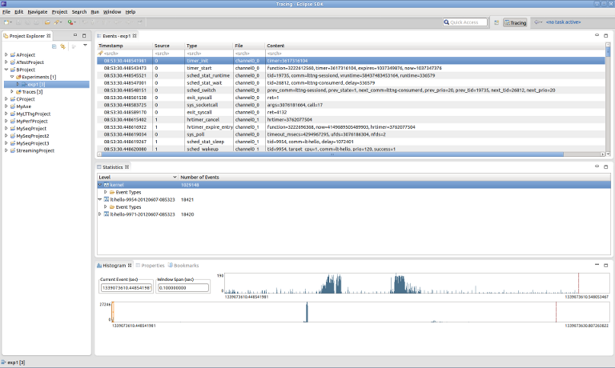
The perspective can be opened from the Eclipse Open Perspective dialog ( Window > Open Perspective... > Other).
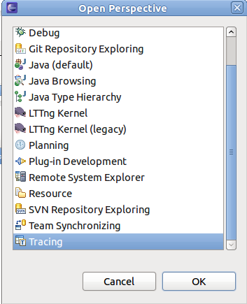
On top to these views, the Tracing and Monitoring Framework (TMF) feature provides a set of generic tracing specific views, such as:
To open one of the above Tracing view, use the Eclipse Show View dialog ( Window > Show View > Other.... Then select the relevant view from the Tracing.

Additionally, the LTTng feature provides a LTTng Tracer Control. It comes with a dedicated Control View.
The project view is the standard Eclipse Project Explorer. Tracing projects are well integrated in the Eclipse's Common Navigator Framework. The Project Explorer shows Tracing project with a small "T" decorator in the upper right of the project folder icon.
A new Tracing project can be created using the New Tracing Project wizard. To create a new Tracing select File > New > Project... from the main menu bar or alternatively form the context-sensitive menu (click with right mouse button in the Project Explorer.
The first page of project wizard will open.

In the list of project categories, expand category Tracing and select Tracing Project and the click on Next >. A second page of the wizard will show. Now enter the a name in the field Project Name, select a location if required and the press on Finish.

A new project will appear in the Project Explorer view.
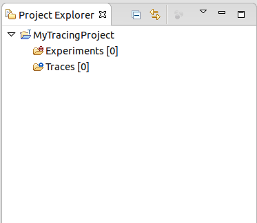
Tracing projects have two sub-folders: Traces which holds the individual traces, and Experiments which holds sets of traces that we want to correlate.
The Traces folder holds the set of traces available for experiments. To import a trace to the traces folder, select the Traces folder and click the right mouse button. Then select Import... menu item in the context-sensitive menu.
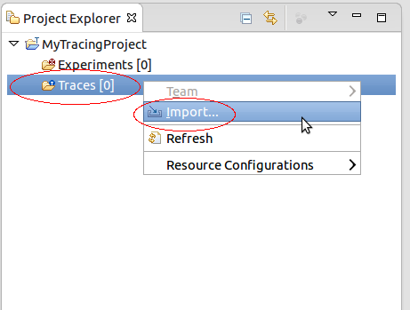
A new display will show for selecting traces to import. By default, it shows the correct destination directory where the traces will be imported to. Now, specify the location of the traces by entering the path directly in the Source Directory or by browsing the file system (click on button browse). Then select the traces to import in the list of files and folders. Optionally, select the Trace Type from the drop-down menu, select or deselect the checkboxes for Overwrite existing trace without warning and Create links into workspace. When all options are configured, click on Finish.
Note, that traces of certain types (e.g. LTTng Kernel) are actually a composite of multiple channel traces grouped under a folder. It is the folder that has to be imported.
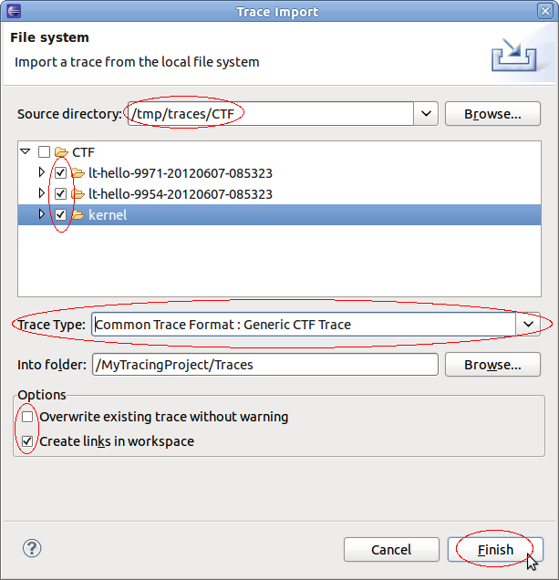
Upon successful importing the traces will be stored in the Traces folder. If a trace type was selected in the import dialog, then the corresponding icon will be displayed. Linked traces will have a little arrow as decorator on the right bottom corner.
Note that trace type is an extension point of the Tracing and Monitoring Framework (TMF). Depending on the which features are loaded, the list of trace types can vary.
If no trace type was selected a trace type as to be associated to a trace before it can be opened. To select a trace type select the relevant trace and click the right mouse button. In the context-sensitive menu, select Select Trace Type... menu item. A sub-menu will show will all available trace type categories. From the relevant category select the required trace type. The examples, below show how to select the Common Trace Format types LTTng Kernel and Generic CTF trace.


After selecting the trace type, the trace icon will be updated with the corresponding trace type icon.

An experiment consists in an arbitrary number of aggregated traces for purpose of correlation. In the degenerate case, an experiment can consist of a single trace. The experiment provides a unified, time-ordered stream of the individual trace events.
To create an experiment, select the folder Experiments and click the right mouse button. Then select New....

A new display will open for entering the experiment name. Type the name of the experiment in the text field Experiment Name and the click on OK.

After creating an experiment, traces need to be added to the experiment. To select traces for an experiment select the newly create experiment and click the right mouse button. Select Select Traces... from the context sensitive menu.

A new dialog box will open with a list of available traces. Select the traces to add from the list and then click on Finish.

Now the selected traces will be linked to the experiment and will be shown under the Experiments folder.

Alternatively, traces can be added to an experiment using Drag and Drop.
To remove one or more traces for an experiment select the trace(s) to remove under the Experiment folder and click the right mouse button. Select Remove from the context sensitive menu.

After that the selected trace(s) are removed from the experiment. Note that the traces are still in the Traces folder.
Traces and Experiment can be renamed from the Project Explorer view. To rename a trace or experiment select the relevant trace and click the right mouse button. Then select Rename... from the context sensitive menu.

A new dialog box will show for entering a new name. Enter a new trace or experiment name respectively in the relevant text field and click on OK. If the new name already exists the dialog box will show an error and a different name has to be entered.


After successful renaming the new name will show in the Project Explorer. In case of a trace all reference links to that trace will be updated too. Note that linked traces only changes the display name, the underlying trace resource will stay the original name.
Note that all supplementary files will be also handled accordingly (see also Deleting Supplementary Files).
To copy a trace or experiment select the relevant trace or experiment in the Project Explorer view and click the right mouse button. Then select Copy... from the context sensitive menu.

A new dialog box will show for entering a new name. Enter a new trace or experiment name respectively in the relevant text field and click on OK. If the new name already exists the dialog box will show an error and a different name has to be entered.


After successful copy operation the new trace or experiment respectively will show in the Project Explorer. In case of a linked trace, the copied trace will be a link to the original trace too.
Note that the directory for all supplementary files will be copied, too. (see also Deleting Supplementary Files).
To delete a trace or experiment select the relevant trace or experiment in the Project Explorer view and click the right mouse button. Then select Delete... from the context sensitive menu.

A confirmation dialog box will open. To perform the deletion press OK otherwise select Cancel.

After successful operation the selected trace or experiment will be removed from the project. In case of a linked trace only the link will be removed. The actual trace resource remain on the disk.
Note that the directory for all supplementary files will be deleted, too. (see also Deleting Supplementary Files).
Supplementary files are by definition trace specific files that accompany a trace. These file could be temporary files, persistent indexes or any other persistent data files created by the LTTng integration in Eclipse during parsing a trace. For the LTTng 2.0 trace viewer a persistent state history of the Linux Kernel is created and is stored under the name stateHistroy.ht.
All supplementary file are hidden from the user and are handled internally by the TMF. However, there is a possibility to delete the supplementary files so that there are recreated when opening a trace.
To delete all supplementary files from a single trace, select the relevant trace in the Project Explorer view and click the right mouse button. Then select the Delete Supplementary Files... menu item from the context-sensitive menu.

A new dialog box will open with a list of supplementary files. Select the file(s) to delete from the list and press OK.

To delete all supplementary files from all traces of a experiment, select the relevant experiment in the Project Explorer view and click the right mouse button. In the context-sensitive menu select Delete Supplementary Files... menu item.
A new dialog box will open with a list of supplementary files. Note that the supplementary files are prefixed with the trace name to indicate the trace they belong to. Select the file(s) to delete from the list and press OK.

A trace or experiment can be open by double-clicking the left mouse button on the trace or experiment in the Project Explorer view. Alternatively, select the trace or experiment in the in the Project Explorer view and click the right mouse button. Then select Open menu item of the context-sensitive menu.

When opening a trace or experiment all currently open view will be filled which are defined for the corresponding trace type. Additionally, an internal index will be created for fast navigation within a trace. For LTTng 2.0 kernel traces a persistent state history will also be build. This state history will be used in different views to display kernel state information.
Traces can be also be imported to a project by dragging from another tracing project and dropping to the project's trace folder. The trace will be copied and the trace type will be set.
Any resource can be dragged and dropped from a non-tracing project, and any file or folder can be dragged from an external tool, into a tracing project's trace folder. The resource will be copied or imported as a new trace, however the trace type will be unknown and need to be set manually by the user.
It is also possible to drop a trace, resource, file or folder into an existing experiment. If the item does not already exist as a trace in the project's trace folder, it will first be copied or imported, then the trace will be added to the experiment.
The Events view shows the basic trace data in chronological order in a tabular format.
When opened, the Events view displays the events of the currently selected trace or experiment.
The header displays the current trace (or experiment) name.
Being part of the Tracing and Monitoring Framework, the default table displays the following fields:
The first row of the table is the header row a.k.a. the Search and Filter row.

The highlighted event is the current event and is synchronized with the other views. If you select another event, the other views will be synchronized accordingly.
Searching and filtering of events in the table can be performed by entering matching conditions in one or multiple columns in the header row (the first row below the column header).
To toggle between searching and filtering, click on the 'search' (
 ) or 'filter' (
) or 'filter' (
 ) icon in the header row's left margin, or right-click on the header row and select
Show Filter Bar or
Show Search Bar in the context menu.
) icon in the header row's left margin, or right-click on the header row and select
Show Filter Bar or
Show Search Bar in the context menu.
To apply a matching condition to a specific column, click on the column's header row cell, type in a regular expression and press the ENTER key. You can also enter a simple text string and it will be automatically be replaced with a 'contains' regular expression.
When matching conditions are applied to two or more columns, all conditions must be met for the event to match (i.e. 'and' behavior).
To clear all matching conditions in the header row, press the DEL key.
When a searching condition is applied to the header row, the table will select the next matching event starting from the top currently displayed event. Wrapping will occur if there is no match until the end of the trace.
All matching events will have a 'search match' icon in their left margin. Non-matching events will be dimmed.

Pressing the ENTER key will search and select the next matching event. Pressing the SHIFT-ENTER key will search and select the previous matching event. Wrapping will occur in both directions.
Press ESC to cancel an ongoing search.
Press DEL to clear the header row and reset all events to normal.
When a filtering condition is entered in the head row, the table will clear all events and fill itself with matching events as they are found from the beginning of the trace.
A status row will be displayed before and after the matching events, dynamically showing how many matching events were found and how many events were processed so far. Once the filtering is completed, the status row icon in the left margin will change from a 'stop' to a 'filter' icon.
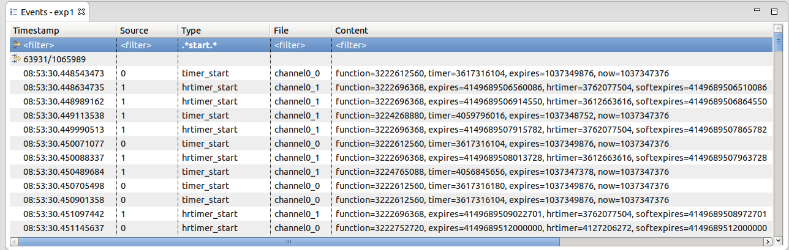
Press ESC to stop an ongoing filtering. In this case the status row icon will remain as a 'stop' icon to indicate that not all events were processed.
Press DEL or right-click on the table and select Clear Filters from the context menu to clear the header row and remove the filtering. All trace events will be now shown in the table. Note that the currently selected event will remain selected even after the filter is removed.
You can also search on the subset of filtered events by toggling the header row to the Search Bar while a filter is applied. Searching and filtering conditions are independent of each other.
Any event of interest can be tagged with a bookmark.
To add a bookmark, double-click the left margin next to an event, or right-click the margin and select Add bookmark.... Alternatively use the Edit > Add bookmark... menu. Edit the bookmark description as desired and press OK.
The bookmark will be displayed in the left margin, and hovering the mouse over the bookmark icon will display the description in a tooltip.
The bookmark will be added to the Bookmarks view. In this view the bookmark description can be edited, and the bookmark can be deleted. Double-clicking the bookmark or selecting Go to from its context menu will open the trace or experiment and go directly to the event that was bookmarked.
To remove a bookmark, double-click its icon, select Remove Bookmark from the left margin context menu, or select Delete from the Bookmarks view.

The Histogram View displays the trace events distribution with respect to time. When streaming a trace, this view is dynamically updated as the events are received.

On the top left, there are two data controls:
Both control can be used to modify their respective value. After validation, the other controls and views will be synchronized and updated accordingly.
The large histogram, at the bottom, shows the event distribution over the whole trace or set of traces. It also has a smaller semi-transparent window, with a cross-hair, that shows the currently selected time range window. The time range window can be zoomed in/out by using the mouse wheel. It can also be selected by the mouse and dragged to another region of the trace.
The smaller histogram, on top right, corresponds to the currently selected time range window, a sub-range of the event set. Its size can also be zoomed in/out using the mouse wheel.
The x-axis of each histogram corresponds to the events timestamps. The timestamp of the first and the last event of the respective ranges is displayed. The y-axis of each histogram shows the minimum/maximum number of events in the corresponding histogram bars.
The dashed vertical magenta bar, on the right, shows the position of the last event. The dashed vertical red bar shows the relative position of the currently selected event. The current event can be changed by clicking on the histogram.
Hovering the mouse over an histogram bar pops up an information window that displays the start/end time of the corresponding bar as well as the number of events it represents.
In each histogram, the following keys are handled:
The Statistics View displays the various event counters that are collected when analyzing a trace. The data is organized per trace. To open the Statistics View, select Windows -> Show View -> Other... -> Tracing -> Statistics. A new view will open with the name Statistics. This view shows 2 columns: Level and Number of Events. After parsing a trace the view will display the number of events per event type. The cells where the number of events are printed also contain a colored bar that indicates the percentage of the event count in relation to the total number of events. The statistics is collected for the whole trace. This view is part of the Tracing and Monitoring Framework (TMF) and is generic. It will work for any trace type extensions. For the LTTng 2.0 integration the Statistics view will display statistics as shown below.:


The Colors view allows the user to define a prioritized list of color settings.
A color setting associates a foreground and background color (used in any events table), and a tick color (used in the Time Chart view), with an event filter.
In an events table, any event row that matches the event filter of a color setting will be displayed with the specified foreground and background colors. If the event matches multiple filters, the color setting with the highest priority will be used.
The same principle applies to the event tick colors in the Time Chart view. If a tick represents many events, the tick color of the highest priority matching event will be used.
Color settings can be inserted, deleted, reordered, imported and exported using the buttons in the Colors view toolbar. Changes to the color settings are applied immediately, and are persisted to disk.

The Filters view allows the user to define preset filters that can be applied to any events table.
The filters can be more complex than what can be achieved with the filter header row in the events table. The filter is defined in a tree node structure, where the node types can be any of EVENTTYPE, AND, OR, CONTAINS, EQUALS, MATCHES or COMPARE. Some nodes types have restrictions on their possible children in the tree.
The EVENTTYPE node filters against the event type of the trace as defined in a plugin extension or in a custom parsers. When used, any child node will have its field combo box restricted to the possible fields of that event type.
The AND node applies the logical and condition on all of its children. All children conditions must be true for the filter to match. A not operator can be applied to invert the condition.
The OR node applies the logical or condition on all of its children. At least one children condition must be true for the filter to match. A not operator can be applied to invert the condition.
The CONTAINS node matches when the specified event field value contains the specified value string. A not operator can be applied to invert the condition. The condition can be case sensitive or insensitive.
The EQUALS node matches when the specified event field value equals exactly the specified value string. A not operator can be applied to invert the condition. The condition can be case sensitive or insensitive.
The MATCHES node matches when the specified event field value matches against the specified regular expression. A not operator can be applied to invert the condition.
The COMPARE node matches when the specified event field value compared with the specified value gives the specified result. The result can be set to smaller than, equal or greater than. The type of comparison can be numerical, alphanumerical or based on time stamp. A not operator can be applied to invert the condition.
Filters can be added, deleted, imported and exported using the buttons in the Filters view toolbar. Changes to the preset filters are only applied and persisted to disk when the save filters button is pressed.
To apply a saved preset filter in an events table, right-click on the table and select Apply preset filter... > filter name.
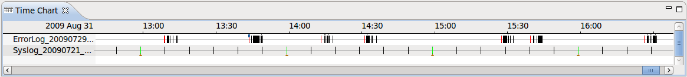
The Time Chart view allows the user to visualize every open trace in a common time chart. Each trace is display in its own row and ticks are display for every punctual event. As the user zooms using the mouse wheel or by right-clicking and dragging in the time scale, more detailed event data is computed from the traces.
Time synchronization is enabled between the time chart view and other trace viewers such as the events table.
Color settings defined in the Colors view can be used to change the tick color of events displayed in the Time Chart view.
When a search is applied in the events table, the ticks corresponding to matching events in the Time Chart view are decorated with a marker below the tick.
When a bookmark is applied in the events table, the ticks corresponding to the bookmarked event in the Time Chart view is decorated with a bookmark above the tick.
When a filter is applied in the events table, the non-matching ticks are removed from the Time Chart view.
The Time Chart only supports traces that are opened in an editor. The use of an editor is specified in the plugin extension for that trace type, or is enabled by default for custom traces.
A new feature of CTF traces is their ability to store user defined data that is not to be placed in an event. It is generally data that is per-trace specific, such as the tracer version and the trace domain. It will be populated when a trace is loaded if the trace has environment variables.

The above picture shows a trace loaded that was collevcted with the
lttng-modules version
2.
0.
0 tracer. It is a
kernel trace of the
3.2.0-18-generic
linux kernel.
Custom parser wizards allow the user to define their own parsers for text or XML traces. The user defines how the input should be parsed into internal trace events and identifies the event fields that should be created and displayed. Traces created using a custom parser can be correlated with other built-in traces or traces added by plug-in extension.
The New Custom Text Parser wizard can be used to create a custom parser for text logs. It can be launched several ways:
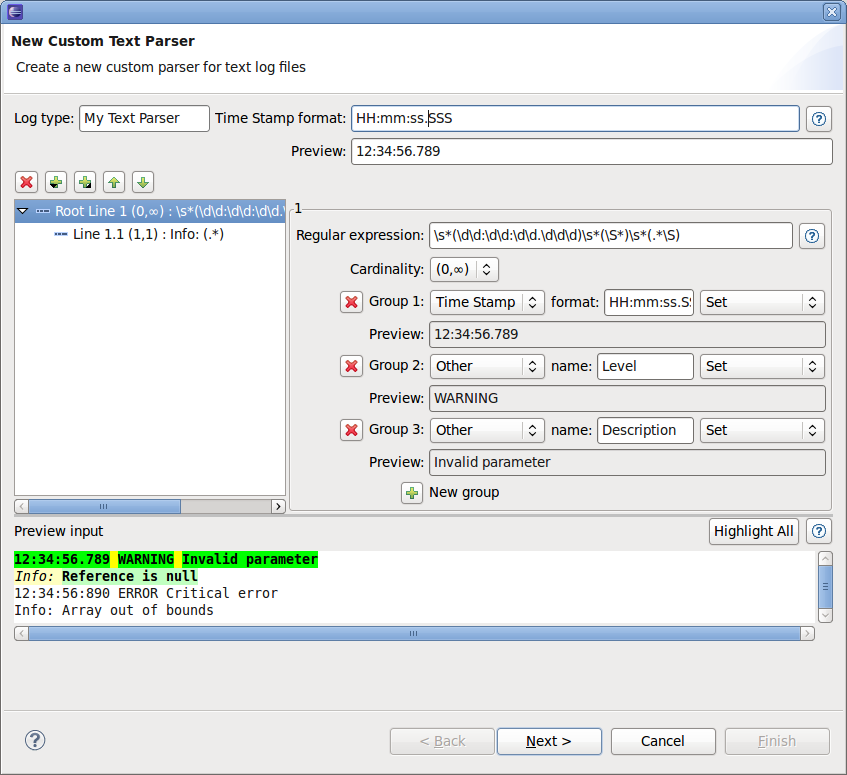
Fill out the first wizard page with the following information:
Note: information about date and time patterns can be found here: http://java.sun.com/javase/6/docs/api/java/text/SimpleDateFormat.html
Click the Add next line, Add child line or Remove line buttons to create a new line of input or delete it. For each line of input, enter the following information:
Note: information about date and time patterns can be found here: http://java.sun.com/javase/6/docs/api/java/util/regex/Pattern.html
Important note: The custom parsers identify a log entry when the first line's regular expression matches (Root Line n). Each subsequent text line in the log is attempted to be matched against the regular expression of the parser's input lines in the order that they are defined (Line n.*). Only the first matching input line will be used to process the captured data to be stored in the log entry. When a text line matches a Root Line's regular expression, a new log entry is started.
Click the Add group or Remove group buttons to define the data extracted from the capturing groups in the line's regular expression. For each group, enter the following information:
The Preview input text box can be used to enter any log data that will be processed against the defined custom parser. When the wizard is invoked from a selected log file resource, this input will be automatically filled with the file contents.
The Preview: text field of each capturing group and of the Time Stamp will be filled from the parsed data of the first matching log entry.
In the Preview input text box, the matching entries are highlighted with different colors:
Yellow : indicates uncaptured text in a matching line. Green : indicates a captured group in the matching line's regular expression for which a custom parser group is defined. This data will be stored by the custom parser. Magenta : indicates a captured group in the matching line's regular expression for which there is no custom parser group defined. This data will be lost. White : indicates a non-matching line.The first line of a matching entry is highlighted with darker colors.
By default only the first matching entry will be highlighted. To highlight all matching entries in the preview input data, click the Highlight All button. This might take a few seconds to process, depending on the input size.
Click the Next button to go to the second page of the wizard.

On this page, the list of default and custom data is shown, along with a preview of the custom parser log table output.
The custom data output can be modified by the following options:
The table at the bottom of the page shows a preview of the custom parser log table output according to the selected options, using the matching entries of the previous page's Preview input log data.
Click the Finish button to close the wizard and save the custom parser.
The New Custom XML Parser wizard can be used to create a custom parser for XML logs. It can be launched several ways:
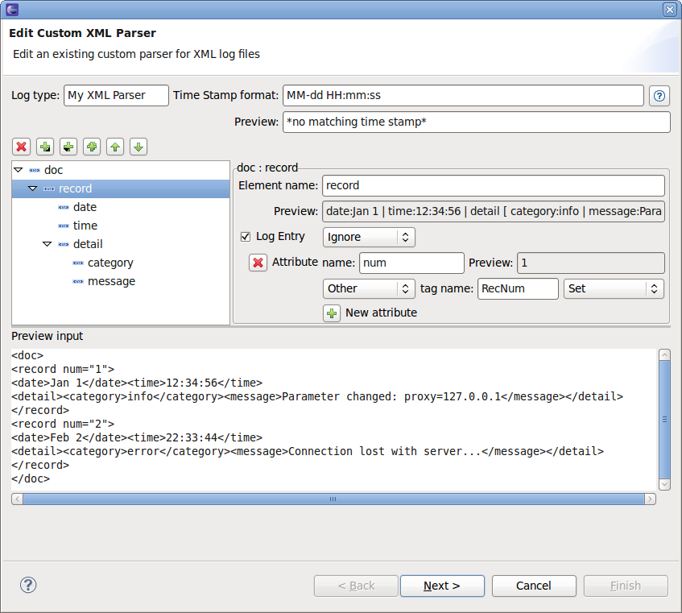
Fill out the first wizard page with the following information:
Note: information about date and time patterns can be found here: http://java.sun.com/javase/6/docs/api/java/text/SimpleDateFormat.html
Click the Add document element button to create a new document element and enter a name for the root-level document element of the XML file.
Click the Add child button to create a new element of input to the document element or any other element. For each element, enter the following information:
Note: An element's extracted data 'value' is a parsed string representation of all its attributes, children elements and their own values. To extract more specific information from an element, ignore its data value and extract the data from one or many of its attributes and children elements.
Click the Add attribute button to create a new attribute input from the document element or any other element. For each attribute, enter the following information:
Note: A log entry can inherited input data from its parent elements if the data is extracted at a higher level.
Click the Feeling lucky button to automatically and recursively create child elements and attributes for the current element, according to the XML element data found in the Preview input text box, if any.
Click the Remove element or Remove attribute buttons to remove the extraction of this input data. Take note that all children elements and attributes are also removed.
The Preview input text box can be used to enter any XML log data that will be processed against the defined custom parser. When the wizard is invoked from a selected log file resource, this input will be automatically filled with the file contents.
The Preview: text field of each capturing element and attribute and of the Time Stamp will be filled from the parsed data of the first matching log entry. Also, when creating a new child element or attribute, its element or attribute name will be suggested if possible from the preview input data.
Click the Next button to go to the second page of the wizard.

On this page, the list of default and custom data is shown, along with a preview of the custom parser log table output.
The custom data output can be modified by the following options:
The table at the bottom of the page shows a preview of the custom parser log table output according to the selected options, using the matching entries of the previous page's Preview input log data.
Click the Finish button to close the wizard and save the custom parser.
The Manage Custom Parsers dialog is used to manage the list of custom parsers used by the tool. To open the dialog:

The ordered list of currently defined custom parsers for the selected type is displayed on the left side of the dialog.
To change the type of custom parser to manage, select the Text or XML radio button.
The following actions can be performed from this dialog:
Click the New... button to launch the New Custom Parser wizard.
Select a custom parser from the list and click the Edit... button to launch the Edit Custom Parser wizard.
Select a custom parser from the list and click the Delete button to remove the custom parser.
Click the Import... button and select a file from the opened file dialog to import all its custom parsers.
Select a custom parser from the list, click the Export... button and enter or select a file in the opened file dialog to export the custom parser. Note that if an existing file containing custom parsers is selected, the custom parser will be appended to the file.
Once a custom parser has been created, any imported trace file can be opened and parsed using it.
To do so:
The trace will be opened in an editor showing the events table, and an entry will be added for it in the Time Chart view.
The LTTng Tracer Control in Eclipse for the LTTng Tracer toolchain version v2.0 (or later) is done using SSH and requires an SSH server to be running on the remote host. For the SSH connection the SSH implementation of RSE is used. For that a new System Type was defined using the corresponding RSE extension. The functions to control the LTTng tracer (e.g. start and stop), either locally or remotely, are available from a dedicated Control View.
In the following sections the LTTng 2.0 tracer control integration in Eclipse is described. Please refer to the LTTng 2.0 tracer control command line manual for more details and descriptions about all commands and their command line parameters References.
To open the Control View, select ' Window->Show View->Other...->LTTng->Control View.

To connect to a remote host, select the New Connection button in the Control View.

A new display will show for entering the remote host information. A drop down menu will filled with all existing host information which were used before. To enter the host information either select one of the hosts in the drop down menu or enter the host information manually.
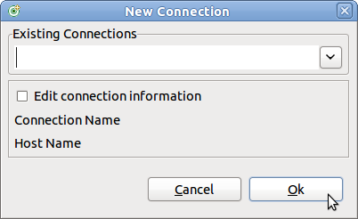
To use an existing connection definition, select the relevant entry in the drop-down menu and then select Ok.

To enter the host information manually select first the button Edit connection information. Then the text fields Connection Name and Host Name will enabled. Enter the relevant information and then select Ok.
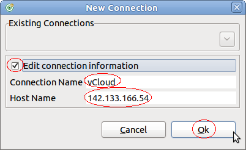
A new display will show for providing the user name and password. This display only opens if no password had been saved before. Enter user name and password in the Enter Password dialog box and select Ok.
The Host Name holds the IP address or DNS name of the remote system. The Connection Name is the alias name to be displayed in the Control View.

After pressing Ok the SSH connection will be established and after successful login the Control View implementation retrieves the LTTng Tracer Control information. This information will be displayed in the Control View in form of a tree structure.

The top level tree node is the representation of the remote connection (host). The connection name of the connection will be displayed. Depending on the connection state different icons are displayed. If the node is
CONNECTED the icon is shown
 , otherwise (states
CONNECTING,
DISCONNNECTING or
DISCONNECTED the icon is
.
, otherwise (states
CONNECTING,
DISCONNNECTING or
DISCONNECTED the icon is
.
Under the host level two folder groups are located. The first one is the Provider group. The second one is the Sessions group.
Under the Provider group all trace providers are displayed. Trace providers are Kernel and any user space application that supports UST tracing. Under each provider a corresponding list of events are displayed.
Under the Sessions group all current sessions will be shown. The level under the sessions show the configured domains. Currently the LTTng 2.0 Tracer Toolchan supports domain Kernel and UST global. Under each domain the configured channels will be displayed. The last level is under the channels where the configured events are displayed.
Each session can be
ACTIVE or
INACTIVE. Active means that tracing has been started, inactive means that the tracing has been stopped. Depending on the state of a session a different icon is displayed. The icon for an active session is
 . The icon for an inactive session is
. The icon for an inactive session is
 .
.
Each channel can be
ENABLED or
DISABLED. An enabled channel means that all configured events of that channel will be traced and a disabled channel won't trace any of its configured events. Different icons are displayed depending on the state of the channel. The icon for an enabled channel is
 and the icon for a disabled channel is
and the icon for a disabled channel is
 .
.
Events within a channel can be in state
ENABLED or
DISABLED. Enabled events are stored in the trace when passed during program execution. Disabled events on the other hand won't be traced. Depending on the state of the event the icons for the event is different. An enabled event has the icon
 and a disabled event the icon
and a disabled event the icon
 .
.
To disconnect from a remote host, select the host in the Control View and press the Disconnect button. Alternatively, press the right mouse button. A context-sensitive menu will show. Select the Disconnect button.

To connect to a remote host, select the host in the Control View and press the Connect button. Alternatively, press the right mouse button. A context-sensitive menu will show. Select the Connect button. This will start the connection process as discribed in Creating a New Connection to a Remote Host.

To delete a remote host connection, select the host in the Control View and press the Delete button. Alternatively, press the right mouse button. A context-sensitive menu will show. Select the Delete button. For that command to be active the connection state has to be DISCONNECTED.

To create a tracing session, select the tree node Sessions and press the right mouse button. Then select the Create Session... button of the context-sensitive menu.

A dialog box will open for entering information about the session to be created.

Fill in the Session Name and optionally the Session Path and press Ok. Upon successful operation a new session will be created and added under the tree node Sessions.
Enabling channels can be done using a session tree node when the domain hasn't be created in the session or, alternatively on a domain tree node of a session in case the domain is already available.
To enable a channel, select the tree node of the relevant session and press the right mouse button. Then select the Enable Channel... button of the context-sensitive menu.

A dialog box will open for entering information about the channel to be created.

By default the domain Kernel is selected and the corresponding default values are shown. To create a UST channel, select UST under the domain section. To get the default values of UST, then press button Default.
If required update the following channel information and then press Ok.
Upon successful operation, the requested domain will be created under the session tree node as well as the requested channel will be added under the domain. The channel will be ENABLED.
Once a domain is available, channels can be enabled directly using the domain. To enable a channel under an existing domain, select the tree node of the relevant domain and press the right mouse button. Then select the Enable Channel... button of the context-sensitive menu.

The dialog box for enabling channel will open for entering information about the channel to be created. Note that the domain is pre-selected and cannot be changed.

Fill the relevant information and press Ok.
To disable one or more enabled channels, select the tree nodes of the relevant channels and press the right mouse button. Then select the Disable Channel menu item of the context-sensitive menu.

Upon successful operation, the selected channels will be DISABLED and the icons for the channels will be updated.
To enable one or more disabled channels, select the tree nodes of the relevant channels and press the right mouse button. Then select the Enable Channel menu item of the context-sensitive menu.

Upon successful operation, the selected channels will be ENABLED and the icons for the channels will be updated.
Enabling events can be done using different levels in the tree node. It can be done on the session, domain level and channel level. For the case of session or domain, i.e. when no specific channels is assigned then enabling of events is done on the default channel with the name channel0 which created, if not already exists, by the LTTng tracer control on the server side.
To enable events, select the tree node of the relevant session and press the right mouse button. Then select the Enable Event (default channel)... button of the context-sensitive menu.
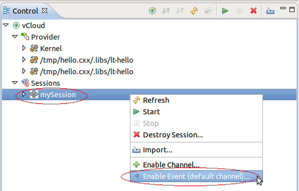
A dialog box will open for entering information about events to be enabled.

By default the domain Kernel is selected and the kernel specific data sections are created. From this dialog box kernel Tracepoint events, System calls (Syscall), a Dynamic Probe or a Dynamic Function entry/return probe can be enabled. Note that events of one of these types at a time can be enabled.
To enable Tracepoint events, first select the corresponding Select button, then select either all tracepoins (select All) or select selectively one or more tracepoints in the displayed tree of tracepoints and finally press Ok.

Upon successful operation, the domain Kernel will be created in the tree (if neccessary), the default channel with name "channel0" will be added under the domain (if necessary) as well as all requested events of type TRACEPOINT under the channel. The channel and events will be ENABLED.

To enable all Syscalls, select the corresponding Select button and press Ok.

Upon successful operation, the event with the name syscalls and event type SYSCALL will be added under the default channel (channel0). If necessary the domain Kernel and the channel channel0 will be created.

To enable a Dynamic Probe event, select the corresponding Select button, fill the Event Name and Probe fields and press Ok. Note that the probe can be an address, symbol or a symbol+offset where the address and offset can be octal (0NNN...), decimal (NNN...) or hexadecimal (0xNNN...).

Upon successful operation, the dynamic probe event with the given name and event type PROBE will be added under the default channel (channel0). If necessary the domain Kernel and the channel channel0 will be created.

To enable a Dynamic Function entry/return Probe event, select the corresponding Select button, fill the Event Name and Function fields and press Ok. Note that the funtion probe can be an address, symbol or a symbol+offset where the address and offset can be octal (0NNN...), decimal (NNN...) or hexadecimal (0xNNN...).
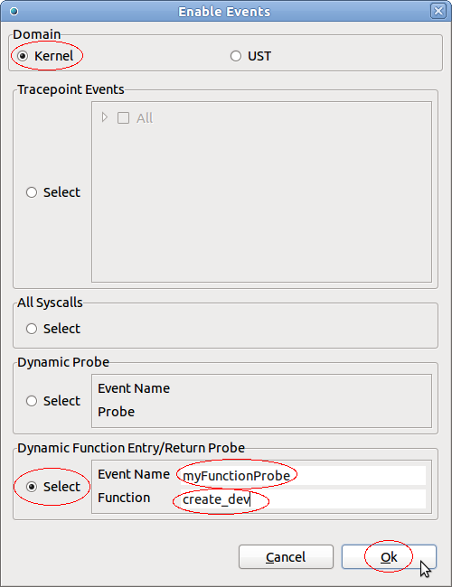
Upon successful operation, the dynamic function probe event with the given name and event type PROBE will be added under the default channel (channel0). If necessary the domain Kernel and the channel channel0 will be created.

For enabling UST events, first open the enable events dialog as described in section Enabling Kernel Events On Session Level and select domain UST.
To enable Tracepoint events, first select the corresponding Select button, then select either all tracepoins (select All) or select selectively one or more tracepoints in the displayed tree of tracepoints and finally press Ok.

Upon successful operation, the domain UST global will be created in the tree (if neccessary), the default channel with name "channel0" will be added under the domain (if necessary) as well as all requested events under the channel. The channel and events will be ENABLED. Note that for the case that All tracepoints were selected the wildcard * is used which will be shown in the Control View as below.
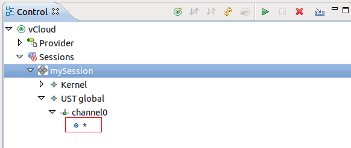
For UST it is possible to enable Tracepoint events using a wildcard. To enable Tracepoint events with a wildcard, select first the corresponding Select button, fill the Wildcard field and press Ok.
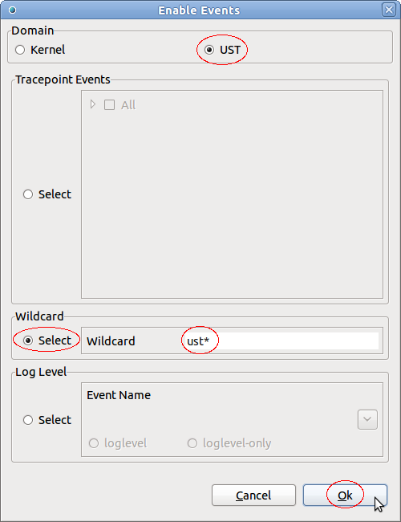
Upon successful operation, the event with the given wildcard and event type TRACEPOINT will be added under the default channel (channel0). If necessary the domain UST global and the channel channel0 will be created.

For UST it is possible to enable Tracepoint events using log levels. To enable Tracepoint events using log levels, select first the corresponding Select button, select a log level from the drop down menu, fill in the relevant information (see below) and press Ok.

Upon successful operation, the event with the given event name and event type TRACEPOINT will be added under the default channel (channel0). If necessary the domain UST global and the channel channel0 will be created.

Kernel events can also be enabled on the domain level. For that select the relevant domain tree node, click the right mouse button and the select Enable Event (default channel).... A new dialog box will open for providing information about the events to be enabled. Depending on the domain, Kernel or UST global, the domain specifc fields are shown and the domain selector is preselected and read-only.

To enable events for domain Kernel follow the instructions in section Enabling Kernel Events On Session Level, for domain UST global Enabling UST Events On Session Level.
When enabling events on the domain level, the events will be add to the default channel channel0. This channel will be created by on the server side if neccessary.
Kernel events can also be enabled on the channel level. If necessary, create a channel as described in sections Creating Channels On Session Level or Creating Channels On Domain Level.
Then select the relevant channel tree node, click the right mouse button and the select Enable Event.... A new dialog box will open for providing information about the events to be enabled. Depending on the domain, Kernel or UST global, the domain specifc fields are shown and the domain selector is preselected and read-only.

To enable events for domain Kernel follow the instructions in section Enabling Kernel Events On Session Level, for domain UST global Enabling UST Events On Session Level.
When enabling events on the channel level, the events will be add to the selected channel.
To disable one or more enabled events, select the tree nodes of the relevant events and click the right mouse button. Then select Disable Event menu item in the context-sensitive menu.

Upon successful operation, the selected events will be DISABLED and the icons for these events will be updated.
To enable one or more disabled events, select the tree nodes of the relevant events and press the right mouse button. Then select the Enable Event menu item of the context-sensitive menu.

Upon successful operation, the selected events will be ENABLED and the icons for these events will be updated.
Note: There is currently a limitation for kernel event of type SYSCALL. This kernel event can not be disabled. An error will appear when trying to disable this type of event. A work-around for that is to have the syscall event in a separate channel and disable the channel instead of the event.
It is possible to enable events of type Tracepoint directly from the providers and assign the enabled event to a session and channel. Before doing that a session has to be created as described in section Creating a Tracing Session. Also, if other than default channel channel0 is required, create a channel as described in sections Creating Channels On Session Level or Creating Channels On Domain Level.
To assign tracepoint events to a session and channel, select the events to be enabled under the provider (e.g. provider Kernel), click right mouse button and then select Enable Event... menu item from the context sensitive menu.

A new display will open for defining the session and channel.

Select a session from the Session List drop-down menu, a channel from the Channel List drop-down menu and the press Ok. Upon successful operation, the selected events will be added to the selected session and channel of the domain that the selected provider belongs to. In case that there was no channel available, the domain and the default channel channel0 will be created for corresponding session. The newly added events will be ENABLED.

It is possible to add contexts to channels and events. Adding contexts on channels and events from the domain level, will enable the specified contexts to all channels of the domain and all their events. To add contexts on the domain level, select a domain, click right mouse button on a domain tree node (e.g. provider Kernel) and select the menu item Add Context... from the context-sensitive menu.
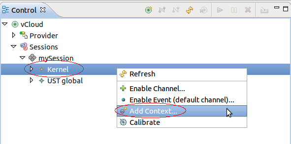
A new display will open for selecting one or more contexts to add.

The tree shows all available context that can be added. Select one or more context and the press Ok. Upon successful operation, the selected context will be added to all channels and their events of the selected domain.
Note: The LTTng UST tracer only supports contexts procname, pthread_id, vpid vtid. Adding any other contexts in the UST domina will fail.
Adding contexts on channels and events from the channel level, will enable the specified contexts to all events of the selected channel. To add contexts on the channel level, select a channel, click right mouse button on a channel tree node and select the menu item Add Context... from the context-sensitive menu.
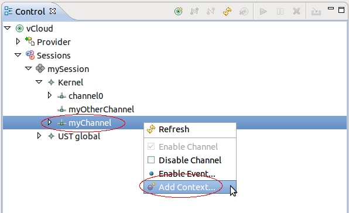
A new display will open for selecting one or more contexts to add. Select one or more contexts as described in chapter Adding Contexts to Channels and Events of a Domain. Upon successful operation, the selected context will be added to all channels and their events of the selected domain. Note that the LTTng 2.0 tracer control on the remote host doesn't provide a way to retrieve added contexts. Hence it's not possible to display the context information in the GUI.
Adding contexts to a event of a channel, select an event of a channel, click right mouse button on the corresponding event tree node and select the menu item Add Context... from the context-sensitive menu.

A new display will open for selecting one or more contexts to add. Select one or more contexts as described in chapter Adding Contexts to Channels and Events of a Domain. Upon successful operation, the selected context will be added to the selected event.
To start tracing, select one or more sessions to start in the Control View and press the Start button. Alternatively, press the right mouse button on the session tree nodes. A context-sensitive menu will show. Then select the Start menu item.

Upon successful operation, the tracing session will be ACTIVE and the icon of the session will be updated.
To stop tracing, select one or more sessions to stop in the Control View and press the Stop button. Alternatively, click the right mouse button on the session tree nodes. A context-sensitive menu will show. Then select the Stop menu item.

Upon successful operation, the tracing session will be INACTIVE and the icon of the session will be updated.
To destroy a tracing session, select one or more sessions to destroy in the Control View and press the Destroy button. Alternatively, click the right mouse button on the session tree node. A context-sensitive menu will show. Then select the Destroy... menu item. Note that the session has to be INACTIVE for this operation.

A confirmation dialog box will open. Click on Ok to destroy the session otherwise click on Cancel.

Upon successful operation, the tracing session will be destroyed and removed from the tree.
To refresh the remote host information, select any node in the tree of the Control View and press the Refresh button. Alternatively, click the right mouse button on any tree node. A context-sensitive menu will show. Then select the Refresh menu item.

Upon successful operation, the tree in the Control View will be refreshed with the remote host configuration.
The LTTng calibrate command can be used to find out the combined average overhead of the LTTng tracer and the instrumentation mechanisms used. For now, the only calibration implemented is that of the kernel function instrumentation (kretprobes). To run the calibrate command, select the a domain (e.g. Kernel), click the right mouse button on the domain tree node. A context-sensitive menu will show. Select the Calibrate menu item.

Upon successful operation, the calibrate command is executed and relevant information is stored in the trace. Note: that the trace has to be active so that to command as any effect.
To import traces from a tracing session, select the relevant session and click on the Import Button. Alternatively, click the right mouse button on the session tree node and select the menu item Import... from the context-sensitive menu.

A new display will open for selecting the traces to import.

Select the trace to be imported by selecting the relevant traces in the tree viewer, select a tracing project from the Available Projects combo box and select the Overwrite button ( Overwrite existing trace without warning) if required. Then press button Ok. Upon successful import operation the the selected traces will be stored in the Traces directory of the specified tracing project. From the Project Explorer view, the trace can be analyzed further.
Note: If the overwrite button ( Overwrite existing trace without warning) was not selected and a trace with the same name of a trace to be imported already exists in the project, then a new confirmation dialog box will open.

To Overwrite select the Overwrite Button and press Ok.
If the existing trace should not be overwritten select, then select the Rename option of the confirmation dialog box above, enter a new name and then press Ok.

The Control View provides property information of selected tree component. Depending on the selected tree component different properties are displayed in the property view. For example, when selecting the node level the property view will be filled as followed:

List of properties:
Serveral LTTng 2.0 tracer control preferences exists which can be configured. To configure these preferences, select Window->Preferences from the top level menu. The preference display will open. Then select Tracing->LTTng Tracer Control Preferences. This preferences page allows the user to specify the tracing group of the user and allows the user to configure the logging of LTTng 2.0 tracer control commands and results to a file.
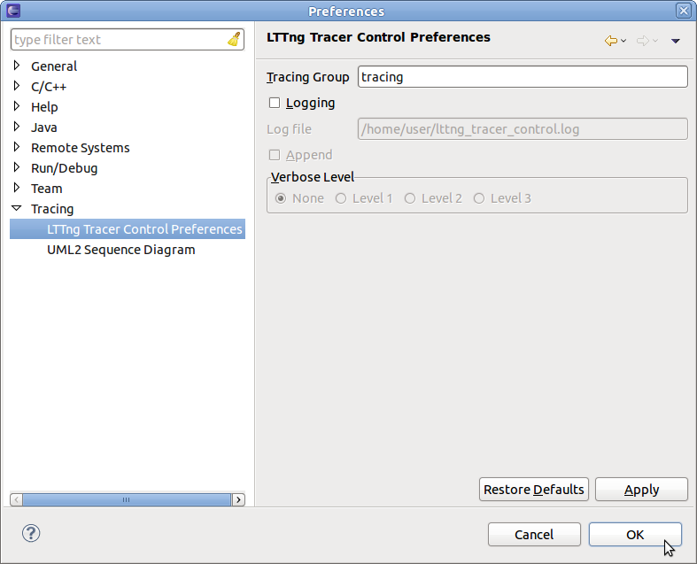
To change the tracing group of the user which will be specified on each command line, enter the new group name in the Tracing Group text field and click ok. The default tracing group is tracing and can be restored by pressing the Restore Defaults button.
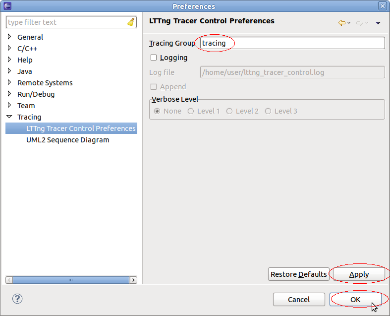
To configure logging of trace control commands and the corresponding command result to a file, selected the button Logging. To append to an existing log file, select the Append button. Deselect the Append button to overwrite any existing log file. It's possible to specify a verbose level. There are 3 levels with inceasing verbosity from Level 1 to Level 3. To change the verbosity level, select the relevant level or select None. If None is selected only commands and command results are logged. Then press on button Ok. The log file will be stored in the users home directory with the name lttng_tracer_control.log. The name and location cannot be changed. To reset to default preferences, click on the button Restore Defaults.
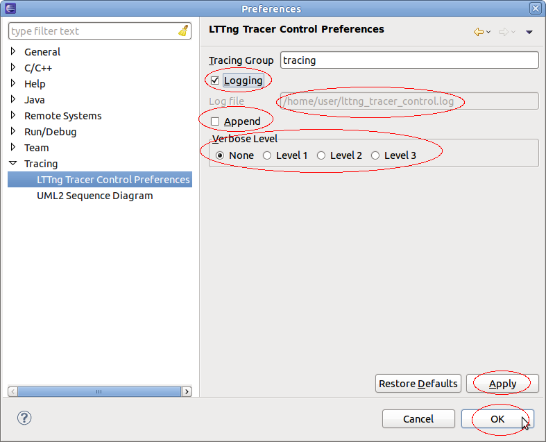
|
|

|
|
| Installation | LTTng Kernel Analysis |